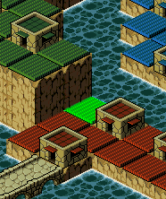

| 概要 | 情報 | ステージ攻略 |
| 地図 | テクニック | モナモナ攻略へ |
| ユニットの動きで大きく戦術を変える必要のあるマップです。 スタートして、すぐに上の画像のように7 人くらいのユニットに、指示を出していきます。 先ほど指示を出したユニットには、最終的に上の画像の位置に柵を作らせます。この作業が終わったら、しばらくは戦況を見つつ戦力を蓄えます。 ここで、無駄な出費を抑えるためにM ユニットは全て体重を2000g 以下に抑えるようにしましょう。 もし、赤国が青国へ攻めた場合は、白国が巨大化し、青国まで侵攻してくれます。そのため、上の画像のように、赤国の城下を抜け、青国へ攻め込むまでは何もしないで待機していてください。 そして、白国が青国へ攻めていったら、上の画像の丸の位置のどちらかに橋を架けて、白国の城下を一気に占領し、城を壊します。 白国が青国を滅亡させる前に、自国が白国を滅亡させれば、占領率100% が狙えます。 ただし、このように敵国のユニットが動いた場合は、青国のユニットが頻繁に上の画像の位置にある柵を壊しに来るので、常にこの付近にユニットを待機させ、突破されないようにしてください。  このマップでは、重要なポイントが一カ所あり、それが上の画像の黄緑色のマスです。 もしこのマスに自国の家を建てれば、この崖を自由に移動できるために、移動時間を短縮できます。 一方、敵国がこのマスに家を建てた場合は、注意が必要です。敵国は上の黄緑色のマスの位置に家を建てた場合、このマスに隣接する崖の上のマスに必ず家を建てます。そのため、崖の上の家を壊さなければ、敵国は何もできず、全く害はありません。しかし、敵国の家を壊してしまった場合、敵国の侵攻経路となり、対処が面倒くさくなるので、もし敵国が黄緑色のマスに家を建てた場合は、自国のユニットを待機させるなどして、敵国の家を壊さないようにしてください。 |
| 概要 | 情報 | ステージ攻略 |
| 地図 | テクニック | モナモナ攻略へ |